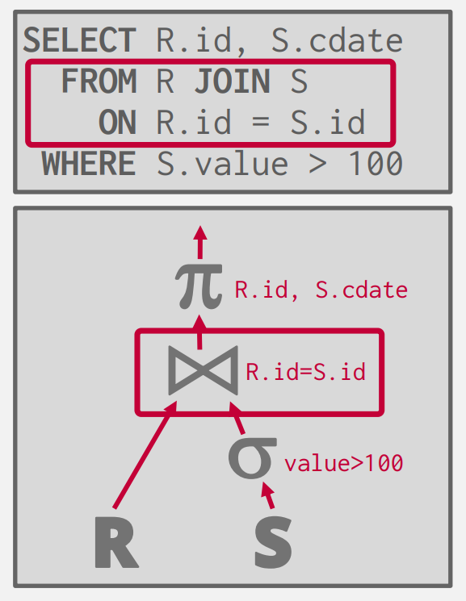
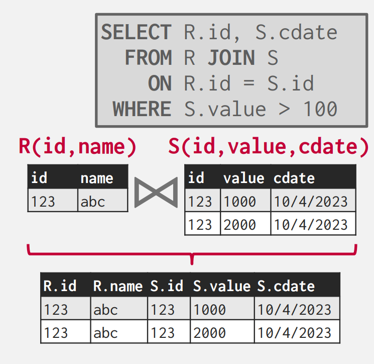
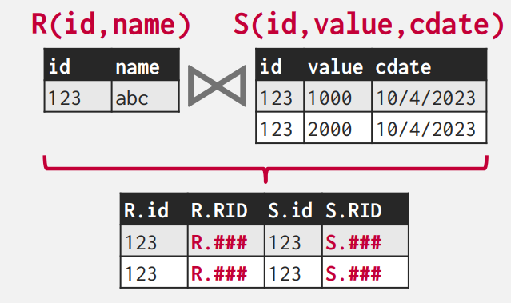
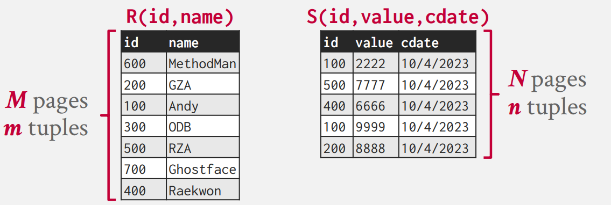
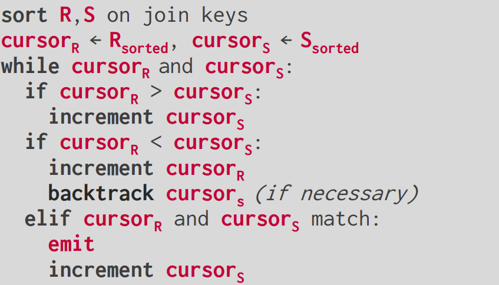
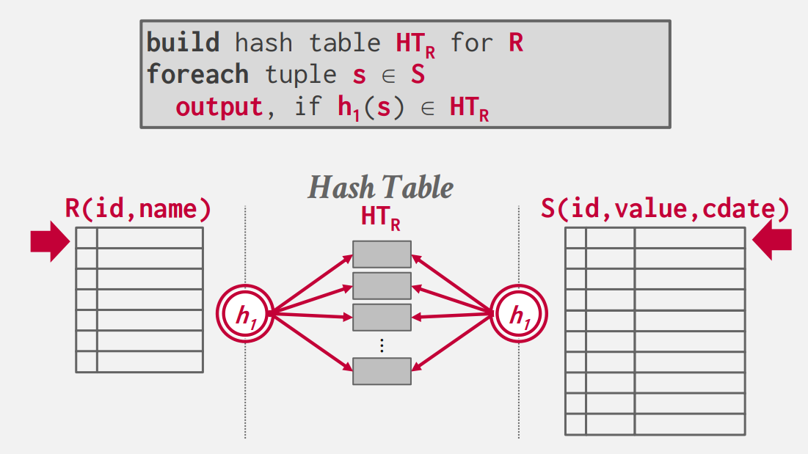
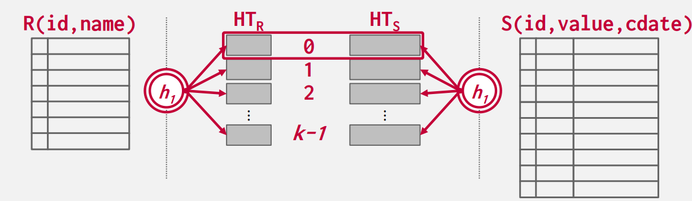
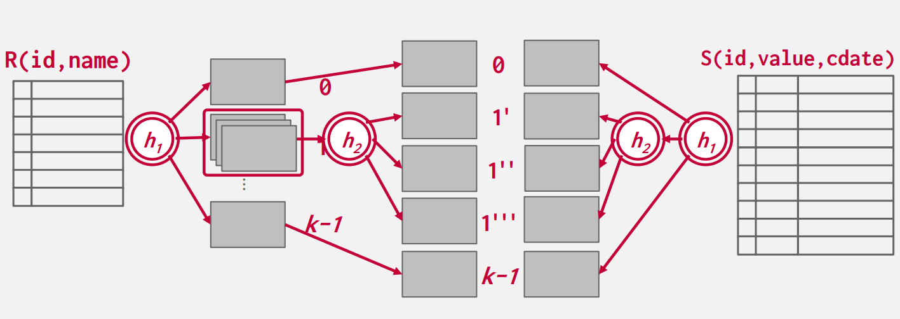

Joins Algorithms
Joins
在关系型数据库中，我们规范化表，来避免不必要的重复数据。这也使得，我们在一些情况下，需要通过以有的表创建新的表。于是就有了 join 操作，来将两张表合并成一张新的表。
我们从两方面来介绍 join 操作：
-
操作的输出
-
操作的花费分析
Operator Output

对于 join 操作的输出，对于每个元组 \(r\in R\)，每个元组 \(s\in S\)，如果满足 on 给出的条件，就连接形成一个新的元组，作为新表的一部分。
处理 join 属性，输出的结果也于很多因素有关：
-
查询的处理模型
-
存储模型：NSM（行存储） 或 DSM（列存储）
-
查询本身
join 运算符输出的内容有多种表示方法：
- Early Materialization：操作时，DBMS 直接将数据拷贝到新元组中，该方法的有点是，后续的所有操作都不需要回到初始表中取数据。缺点就是需要消耗更多的空间来存储整个元组。

DBMS 也会进行一些额外的计算，省略一些后续不需要的属性，来优化这个方法。
- Late Materialization：操作时，DBMS 将需要
join的 key 拷贝下来，并记录满足条件元组的 record id，到最后输出结果时，再根据 record id 取出具体的数据。对于列存储数据库，这个方法是理想的，因为不会拷贝不需要的数据。

Cost Analysis
在 join 操作中，我们不关心计算的复杂度，因为结果集的大小是一定的，我们考虑的是 join 算法的 I/O 消耗，假设：
-
表 \(R\) 有 \(M\) 页，\(m\) 条记录在表中。
-
表 \(S\) 有 \(N\) 页，\(n\) 条记录在表中。
操作 \(R \Join S\) 是很常见的操作，我们有必要仔细优化。但对于单纯的 \(R \times S\) 这样的消耗很大，现实中的用途也比较少见，除非你需要进行某种特定的操作，比如需要用到数据集的笛卡尔积。
有很多算法和优化来降低 join 操作的消耗，但任意单个算法都无法在所有情况下表现的很好。之后我们会介绍如下的 join 算法：
-
Nested Loop Join
-
Sort-Merge Join
-
Hash Join
Hash Join 算法在通常情况下是最快的，尤其适用于 OLAP 系统。而对于 OLTP 系统，通常不会进行大规模的 join 操作，所有通常会使用简单的 Nested Loop Join。像 MySQL，直到 2019 年才支持了 Hash Join。如果你希望最后输出的数据是排好序的，那么 DBMS 可能会倾向于选择 Sort-Merge Join。
Nested Loop Join
最简单的想法，我们嵌套两层循环，一个个的遍历元组，如果它们满足 join 的条件，我们则输出它们。在循环中，处于外层循环的，我们称作为外表，处于内层循环的，称作内表。

这是最简单的方法，I/O 消耗为 \(M + m\cdot N\)，对于每个元组，我们都要重新取出 \(S\) 表中的所有页。一个简单的优化是，我们让较小的表做外表，I/O 消耗就变成了 \(N+n\cdot M\)。
如果每页可以容纳 \(k\) 个元组，那么：
显然后者是更优的。但这还远远不够。
Block Nested Loop Join
既然我们读入了内表的一个页，我们为什么不计算完当前在内存中的所有元组 join 后的结果，再放回页呢。
此时的 I/O 消耗为：\(M + NM\)，我们依旧可以让较小的表放做外表，但优化很有限。
如果我们可以有 \(B\) 个页面。可以用 \(B-2\) 个页面来存放外表数据，\(1\) 个页面存内表数据，一个页面存输出数据。
我们每次取出 \(B-2\) 个页面和这一个内表页面进行 join 操作，这样可以有效的减少循环次数
for i in range(0,M,B):
Pages = M[i:min(i + B,M)]
for PageS in S:
for PageR in Pages:
for r in PageR:
for s in PageS:
if match(r,s):print(r,s)
此时 I/O 消耗为 \(M + \left \lceil \frac{M}{B - 2} \right \rceil \cdot N\)
Index Nested Loop Join
上面的 Loop Join 算法，DBMS 都必须扫描表，来找到一个匹配值进行 join。但如果对于我们 join 的 key 我们事先有一个索引或者我们可以创建一个临时索引，使用它来加速我们的计算。
这个代码中，我们事先有 id 这个属性的索引，我们利用索引可以直接查询所有满足 r.id == s.id 的元组，再判断其他 key 是否匹配，匹配就输出。
此时 I/O 消耗为 \(M + m\cdot C\)，这里 \(C\) 表示索引的复杂度，这与创建的索引类型有关。
Summary
对于 Loop Join 的关键点：
-
尽量选择小表作 Outer table
-
尽可能多的将 Outer table 缓存到内存中
-
扫描 Inner table 时，可以创建临时索引，加速计算。
Sort-Merge Join
顾名思义，这种方法要先根据 join 的 key 将两张表进行排序，然后在通过类似归并排序的过程，将 key 值相等的元组连接，并输出。

如果一个或两个表已经根据 join 属性排序，或输出结果仍需要根据 join key 排序，那么此算法将非常有用。
此时 I/O 消耗为：
-
Sort R Cost：\(2M\cdot (1 + \left \lceil \log_{B-1}{\left \lceil \frac{M}{B}\right \rceil} \right \rceil)\)
-
Sort S Cost：\(2N\cdot (1 + \left \lceil \log_{B-1}{\left \lceil \frac{N}{B}\right \rceil} \right \rceil)\)
-
Average Merge Cost：\(M + N\)
总花费就是 Sort + Mege。
回溯内表指针，只会出现在外表遇到重复值的情况，所以当两张表中重复元素过多时，merge 的花费可能会退化为 \(NM\)。
Hash Join
Hash Join 算法的思想是使用哈希表根据元组的 join 属性将元组拆分为更小的块。这将减少 DBMS 在每个元组上的比较次数。但 Hash Join 只能用于判等条件的 join 操作。
一个正常的哈希函数，对于相同的 key，总是能得到相同哈希值。那么对于处于 \(R\) 和 \(S\) 表，需要连接的元组的 join 属性也一定相等，它们哈希后的哈希值就相等。因此 Join 的时候，我们只需要对两个表中 hash 到同样值的 tuples 分别执行 Join 操作即可。
Basic Hash Join
算法有两步：
-
Build：扫描外表，将它的元组都放入到一张临时哈希表中。
-
Probe：扫描内表，在哈希表中找到
join属性匹配的元组，连接并输出。

对于哈希表中的内容，会存储所有的 join 属性，以及数据，数据的存储方式有两种：Early or Late materialization，这就不多赘述了。
一个简单的优化是使用布隆过滤器，我们在遍历外表时初始化布隆过滤器，我们在遍历内表查询哈希表时，每次查询都先询问 布隆过滤器相对应的 join 属性是否存在。它通过组织不必要的查询来减少磁盘 I/O。
Grace Hash Join
当内存中放不下表中的数据，DBMS 不得不使用面向磁盘的哈希表，哈希表的页面会完全随机的写入写出，会导致很差的性能。Grace Hash Join 的思路是对表进行分块。算法有两步：
-
Partition：将两张表关于
join属性进行哈希分块，分成若干个桶，每个桶的数据都可以放入到内存中，在需要的时候一个桶的数据可以写出到磁盘。 -
Probe：比较两张在相同块中的元组，并将比配的元组连接，然后输出。

如果分块后还是放不进内存，就要进行递归分块，使用与之前不同的哈希函数，对溢出的桶再重复 Partition 的操作。

现在假设我们不需要递归分块，我们的 I/O 消耗为：
-
Partition Cost：\(2(M + N)\)，每页都要读入和写出隔一次。
-
Probe Cost：\(M + N\)
总花费就是 \(3(M + N)\)。
Conclusion
我们在 \(M = 1000,m = 1000,000,N = 500,n = 40,000\) 数据均匀分布的情况下，假设一次 I/O 花费的时间为 \(0.1ms\)，计算上述介绍的所有 join 算法的消耗：
| Algorithm | IO Cost | Result |
|---|---|---|
| Nested Loop Join | \(M + m\cdot N\) | \(1.3h\) |
| Block Nested Loop Join | \(M + \left \lceil \frac{M}{B - 2} \right \rceil \cdot N\) | \(0.55s\) |
| Index Nested Loop Join | \(M + m\cdot C\) | Variable |
| Sort-Merge Join | \(M + N + (sort\space cost)\) | \(0.75\) |
| Hash Join | \(3(M + n)\) | \(0.45\) |
Hash Join 在大多数情况都是更优的选择，但是当数据为不均数据或最后结果需要排序时，Sort-Merge Join 表现会更好。